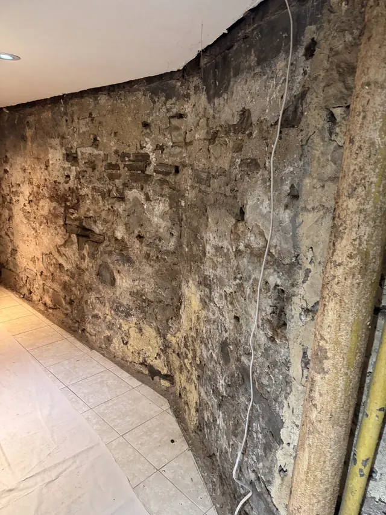

Demolition
The main focus: controlled removal to open up interiors and exterior areas for the next trade or next phase.
- Interior demolition
- Concrete slab removal
- Concrete pad removal
- Garage demolition
- Debris removal


Demolition first. Waterproofing when you need it.

Interior demolition, concrete removal and waterproofing for homes and job sites across Toronto and the GTA.
Call (437) 377-7737Services
Start with demolition, add waterproofing where the space calls for it, and reduce hand-offs between stages.
The main focus: controlled removal to open up interiors and exterior areas for the next trade or next phase.
Interior and exterior systems for foundation walls, drainage routes and sump collection.

Start with what you see
Follow the drainage path
The camera follows the dimpled wall membrane.
Membrane meets the drainage area at the floor edge.
The pan ends beside the round sump lid.
Client diagrams
Choose a view to see the labelled components in each supplied illustration.

Labels show new concrete, an interior waterproofing membrane, drainage gravel, weeping tile, the membrane covering the footing, and the footing.

Labels show the foundation, window well, gravel, soil, weeping tile, and gravel at the footing.
Four-stage view
Scroll or select a stage. The photos show representative site conditions and system components.



Review the visible wall, floor and access conditions.
Reach the area where the drainage work will sit.
Place the membrane and drainage components shown.
Complete the system and close the working surface.
Field work
Filter the supplied project photography, then open any image for a closer view.
From the site
Supplied client video
Labelled placeholder; video not yet supplied.
Labelled placeholder; video not yet supplied.
Labelled placeholder; video not yet supplied.
Labelled placeholder; video not yet supplied.
Labelled placeholder; video not yet supplied.
Labelled placeholder; video not yet supplied.
Labelled placeholder; video not yet supplied.
Labelled placeholder; video not yet supplied.
Labelled placeholder; video not yet supplied.
Labelled placeholder; video not yet supplied.
Labelled placeholder; no testimonial media supplied.
Google reviews
Based on 66 Google reviews. Read the source profile directly—no quotes or names have been reproduced here.
View Google profileFrequently asked
Yes. Demolition is available as its own service, including interior work, concrete removal, garage demolition and debris removal.
Last Nail offers both. When both are needed, coordinating the stages can mean fewer hand-offs for the homeowner or contractor.
Yes. The page serves homeowners and general contractors across Toronto and the GTA.
Share the address or postal code, what needs to be removed or what water condition is visible, and any access details you already know.
Interior waterproofing, exterior waterproofing, foundation crack repair, drainage and sump work are listed services.
Last Nail serves Toronto and the GTA.